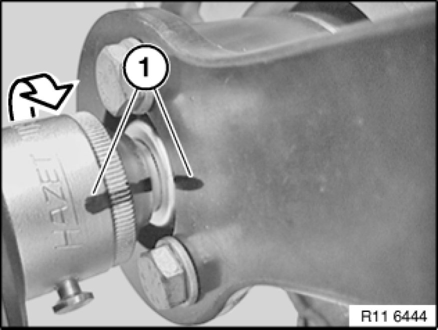

Operation CHARM
: Car repair manuals for everyone.
Home
>>
BMW
>>
2007
>>
X3 3.0si (E83) L6-3.0L (N52K)
>>
Repair and Diagnosis
>>
Maintenance
>>
Timing Component Alignment Marks
>>
Locations
>>
Crankshaft Sprocket
Crankshaft Sprocket

Mark special tools with colored line (1).
See picture.
Important!
Do
not
remove the special tool while tightening the central bolt to torsion angle.
Risk of damage!